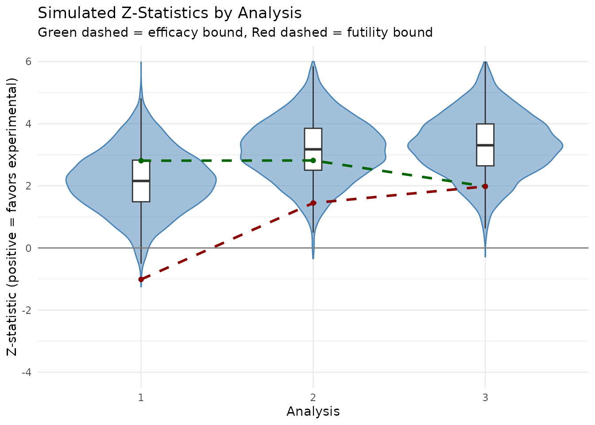

Group sequential design and simulation
Source:vignettes/group-sequential-simulation.Rmd
group-sequential-simulation.RmdThis vignette demonstrates how to create a group sequential design
for negative binomial outcomes using gsNBCalendar() and
simulate the design to confirm design operating characteristics using
sim_gs_nbinom(), check_gs_bound(), and
summarize_gs_sim().
Trial design parameters
We design a trial with the following characteristics:
- Enrollment: 12 months with a constant rate
- Trial duration: 24 months
-
Analyses:
- Interim 1: 10 months
- Interim 2: 18 months
- Final: 24 months
-
Event rates:
- Control: 0.125 events per month (1.5 per year)
- Experimental: 0.0833 events per month (1.0 per year; rate ratio = 0.67)
- Dispersion: 0.5
- Power: 90% (beta = 0.1)
- Alpha: 0.025 (one-sided)
- event gap: 20 days
- dropout rate: 5% at 1 year
- max followup: 12 months
Sample size calculation
First, we calculate the required sample size for a fixed design using the Zhu and Lakkis method:
# Sample size calculation
# Enrollment: constant rate over 12 months
# Trial duration: 24 months
event_gap_val <- 20 / 30.4375 # Minimum gap between events is 20 days (approx)
nb_ss <- sample_size_nbinom(
lambda1 = 1.5 / 12, # Control event rate (per month)
lambda2 = 1.0 / 12, # Experimental event rate (per month)
dispersion = 0.5, # Overdispersion parameter
power = 0.9, # 90% power
alpha = 0.025, # One-sided alpha
accrual_rate = 1, # This will be scaled to achieve the target power
accrual_duration = 12, # 12 months enrollment
trial_duration = 24, # 24 months trial
max_followup = 12, # 12 months of follow-up per patient
dropout_rate = -log(0.95) / 12, # 5% dropout rate at 1 year
event_gap = event_gap_val
)
# Print key results
message("Fixed design")
#> Fixed design
nb_ss
#> Sample size for negative binomial outcome
#> ==========================================
#>
#> Sample size: n1 = 185, n2 = 185, total = 370
#> Expected events: 408.0 (n1: 241.2, n2: 166.8)
#> Power: 90%, Alpha: 0.025 (1-sided)
#> Rates: control = 0.1250, treatment = 0.0833 (RR = 0.6667)
#> Dispersion: 0.5000, Avg exposure (calendar): 11.70
#> Avg exposure (at-risk): n1 = 10.81, n2 = 11.09
#> Event gap: 0.66
#> Dropout rate: 0.0043
#> Accrual: 12.0, Trial duration: 24.0
#> Max follow-up: 12.0Group sequential design
Now we convert this a group sequential design with 3 analyses after
10, 18 and 24 months. Note that the final analysis time must be the same
as for the fixed design. The relative enrollment rates will be increased
to increase the sample size as with standard group sequential design
theory. We specify usTime = c(0.1, 0.18, 1) which along
with the sfLinear() spending function will spend 10%, 18%
and 100% of the cumulative \(\alpha\)
at the 3 planned analyses regardless of the observed statistical
information at each analysis. The interim spending is intended to
achieve a nominal p-value of approximately 0.0025 (one-sided) at each
interim analysis.
# Analysis times (in months)
analysis_times <- c(10, 18, 24)
# Create group sequential design and round the final sample size
gs_nb_calendar <- gsNBCalendar(
x = nb_ss, # Input fixed design for negative binomial
k = 3, # 3 analyses
test.type = 4, # Two-sided asymmetric, non-binding futility
sfu = sfLinear, # Linear spending function for upper bound
sfupar = c(.5, .5), # Identity function
sfl = sfHSD, # HSD spending for lower bound
sflpar = -8, # Conservative futility bound
usTime = c(.1, .18, 1), # Upper spending timing
lsTime = NULL, # Spending based on information
analysis_times = analysis_times # Calendar times in months
)
gs_nb <- gsDesignNB::toInteger(gs_nb_calendar)Textual group sequential design summary:
summary(gs_nb)
#> Asymmetric two-sided with non-binding futility bound group sequential design
#> for negative binomial outcomes, 3 analyses, total sample size 376.0, 90 percent
#> power, 2.5 percent (1-sided) Type I error. Control rate 0.1250, treatment rate
#> 0.0833, risk ratio 0.6667, dispersion 0.5000. Accrual duration 12.0, trial
#> duration 24.0, max follow-up 12.0, event gap 0.66, dropout rates (0.0043,
#> 0.0043), average exposure (calendar) 11.70, (at-risk n1=10.81, n2=11.09).
#> Randomization ratio 1:1. Upper spending: Piecewise linear (line points = 0.5,
#> line points = 0.5) Lower spending: Hwang-Shih-DeCani (gamma = -8)Tabular summary:
gs_nb |>
gsDesign::gsBoundSummary(
deltaname = "RR",
logdelta = TRUE,
Nname = "Information",
timename = "Month",
digits = 4,
ddigits = 2
) |>
lt() |>
lt_header(
title = "Group Sequential Design Bounds for Negative Binomial Outcome",
subtitle = paste0(
"N = ", ceiling(gs_nb$n_total[gs_nb$k]),
", Expected events = ", round(gs_nb$nb_design$total_events, 1)
)
)Simulation study
We simulated 3,600 trials to evaluate the operating characteristics
of the group sequential design. This number of simulations was chosen to
achieve a standard error for the power estimate of approximately 0.005
when the true power is 90% (\(\sqrt{0.9 \times
0.1 / 3600} = 0.005\)). The simulation script is located in
data-raw/generate_gs_simulation_data.R. The script uses the
same helper workflow shown below:
sim_res <- sim_gs_nbinom(...)
bounds_checked <- check_gs_bound(sim_res, gs_nb, info_col = "info_unblinded_ml")
summary_gs <- summarize_gs_sim(bounds_checked)For this verification, n_target is the final group
sequential sample size after integer rounding, and the dropout hazard is
specified on the same monthly time scale as the event rates.
Load simulation results
# Load pre-computed simulation results
results_file <- file.path("inst", "extdata", "gs_simulation_results.rds")
if (!file.exists(results_file) && file.exists("../inst/extdata/gs_simulation_results.rds")) {
results_file <- "../inst/extdata/gs_simulation_results.rds"
}
if (!file.exists(results_file)) {
results_file <- system.file("extdata", "gs_simulation_results.rds", package = "gsDesignNB")
}
if (results_file != "") {
sim_data <- readRDS(results_file)
results <- sim_data$results
summary_gs <- summarize_gs_sim(results)
analysis_summary <- data.table::as.data.table(summary_gs$analysis_summary)
required_summary_cols <- c(
"n_ctrl", "n_exp",
"exposure_total_ctrl", "exposure_total_exp",
"exposure_at_risk_ctrl", "exposure_at_risk_exp",
"events_ctrl", "events_exp"
)
if (!all(required_summary_cols %in% names(analysis_summary))) {
result_dt <- data.table::as.data.table(results)
result_means <- result_dt[, .(
n_ctrl = mean(n_ctrl, na.rm = TRUE),
n_exp = mean(n_exp, na.rm = TRUE),
exposure_total_ctrl = mean(exposure_total_ctrl, na.rm = TRUE),
exposure_total_exp = mean(exposure_total_exp, na.rm = TRUE),
exposure_at_risk_ctrl = mean(exposure_at_risk_ctrl, na.rm = TRUE),
exposure_at_risk_exp = mean(exposure_at_risk_exp, na.rm = TRUE),
events_ctrl = mean(events_ctrl, na.rm = TRUE),
events_exp = mean(events_exp, na.rm = TRUE)
), by = analysis]
existing_result_mean_cols <- intersect(required_summary_cols, names(analysis_summary))
if (length(existing_result_mean_cols) > 0) {
analysis_summary[, (existing_result_mean_cols) := NULL]
}
analysis_summary <- merge(
analysis_summary,
result_means,
by = "analysis",
all.x = TRUE,
sort = FALSE
)
}
n_sims <- sim_data$n_sims
params <- sim_data$params
} else {
# Fallback if data is not available (e.g. not installed yet)
warning("Simulation results not found. Skipping simulation analysis.")
results <- NULL
summary_gs <- NULL
analysis_summary <- NULL
n_sims <- 0
}Simulation results summary
Summary of verification results
We compare planning quantities from the group sequential design with
simulation summaries from summarize_gs_sim(). The design
object reports calendar enrollment at each planned analysis in
n_total, and statistical information in n.I;
keeping those scales distinct is important when comparing simulations
with asymptotic design calculations.
Key distinction: Total Exposure vs Exposure at Risk
-
Total Exposure (
exposure_total): The calendar time a subject is on study, from randomization to the analysis cut date (or censoring). This is the same for both treatment arms by design. -
Exposure at Risk (
exposure_at_risk): The time during which a subject can experience a new event. After each event, there is an “event gap” period during which new events are not counted (e.g., representing recovery time or treatment effect). This differs by treatment group because the group with more events loses more time to gaps.
sim_summary <- data.table::copy(analysis_summary)
if (!"events" %in% names(sim_summary) && "events_total" %in% names(sim_summary)) {
sim_summary[, events := events_total]
}
if (!"info_blinded" %in% names(sim_summary) && "blinded_info" %in% names(sim_summary)) {
sim_summary[, info_blinded := blinded_info]
}
if (!"info_unblinded" %in% names(sim_summary) && "unblinded_info" %in% names(sim_summary)) {
sim_summary[, info_unblinded := unblinded_info]
}
planning_comparison <- data.frame(
Analysis = seq_len(gs_nb$k),
Month = params$analysis_times,
Planned_N = gs_nb$n_total,
Mean_N = sim_summary$n_enrolled,
Planned_Total_Exposure = gs_nb$n1 * gs_nb$exposure + gs_nb$n2 * gs_nb$exposure,
Mean_Total_Exposure = sim_summary$exposure_total_ctrl + sim_summary$exposure_total_exp,
Planned_At_Risk_Exposure =
gs_nb$n1 * gs_nb$exposure_at_risk1 + gs_nb$n2 * gs_nb$exposure_at_risk2,
Mean_At_Risk_Exposure =
sim_summary$exposure_at_risk_ctrl + sim_summary$exposure_at_risk_exp,
Planned_Events = gs_nb$events,
Mean_Events = sim_summary$events,
Planned_Info = gs_nb$n.I,
Mean_Unblinded_Info = sim_summary$info_unblinded
)
planning_comparison$Event_Diff <- planning_comparison$Mean_Events -
planning_comparison$Planned_Events
planning_comparison$Info_Diff <- planning_comparison$Mean_Unblinded_Info -
planning_comparison$Planned_Info
planning_comparison |>
lt() |>
lt_header(
title = "Design Planning Quantities vs Simulation Means",
subtitle = sprintf("Based on %d simulated trials", n_sims)
) |>
lt_label(
Analysis = "Analysis",
Month = "Month",
Planned_N = "Planned N",
Mean_N = "Mean N",
Planned_Total_Exposure = "Planned total exposure",
Mean_Total_Exposure = "Mean total exposure",
Planned_At_Risk_Exposure = "Planned at-risk exposure",
Mean_At_Risk_Exposure = "Mean at-risk exposure",
Planned_Events = "Planned events",
Mean_Events = "Mean events",
Planned_Info = "Planned information",
Mean_Unblinded_Info = "Mean unblinded information",
Event_Diff = "Event diff.",
Info_Diff = "Information diff."
) |>
lt_format(
columns = c(
"Planned_N", "Mean_N",
"Planned_Total_Exposure", "Mean_Total_Exposure",
"Planned_At_Risk_Exposure", "Mean_At_Risk_Exposure",
"Planned_Events", "Mean_Events",
"Planned_Info", "Mean_Unblinded_Info",
"Event_Diff", "Info_Diff"
),
decimals = 1
)Overall operating characteristics
cat("=== Overall Operating Characteristics ===\n")
#> === Overall Operating Characteristics ===
cat(sprintf("Number of simulations: %d\n", n_sims))
#> Number of simulations: 3600
cat(sprintf("Overall Power (P[reject H0]): %.1f%% (SE: %.1f%%)\n",
summary_gs$power * 100,
sqrt(summary_gs$power * (1 - summary_gs$power) / n_sims) * 100))
#> Overall Power (P[reject H0]): 89.9% (SE: 0.5%)
cat(sprintf("Futility Stopping Rate: %.1f%%\n", summary_gs$futility * 100))
#> Futility Stopping Rate: 10.1%
cat(sprintf("Design Power (target): %.1f%%\n", (1 - gs_nb$beta) * 100))
#> Design Power (target): 90.0%Power comparison by analysis
# Create comparison table
crossing_summary <- data.frame(
Analysis = 1:3,
Analysis_Time = params$analysis_times,
Sim_Power = summary_gs$analysis_summary$prob_cross_upper,
Sim_Cum_Power = summary_gs$analysis_summary$cum_prob_upper,
Design_Cum_Power = cumsum(gs_nb$upper$prob[, 2])
)
crossing_summary |>
lt() |>
lt_header(
title = "Power Comparison: Simulation vs Design",
subtitle = sprintf("Based on %d simulated trials", n_sims)
) |>
lt_label(
Analysis = "Analysis",
Analysis_Time = "Month",
Sim_Power = "Incremental Power (Sim)",
Sim_Cum_Power = "Cumulative Power (Sim)",
Design_Cum_Power = "Cumulative Power (Design)"
) |>
lt_format(columns = c("Sim_Power", "Sim_Cum_Power", "Design_Cum_Power"), decimals = 1, percent = TRUE)Visualization of Z-statistics
# Prepare data for plotting
plot_data <- results
plot_data$z_flipped <- -plot_data$z_stat # Flip for efficacy direction
# Boundary data
bounds_df <- data.frame(
analysis = 1:gs_nb$k,
upper = gs_nb$upper$bound,
lower = gs_nb$lower$bound
)
ggplot(plot_data, aes(x = factor(analysis), y = z_flipped)) +
geom_violin(fill = "steelblue", alpha = 0.5, color = "steelblue") +
geom_boxplot(width = 0.1, fill = "white", outlier.shape = NA) +
# Draw bounds as lines connecting analyses
geom_line(
data = bounds_df, aes(x = analysis, y = upper, group = 1),
linetype = "dashed", color = "darkgreen", linewidth = 1
) +
geom_line(
data = bounds_df, aes(x = analysis, y = lower, group = 1),
linetype = "dashed", color = "darkred", linewidth = 1
) +
# Draw points for bounds
geom_point(data = bounds_df, aes(x = analysis, y = upper), color = "darkgreen") +
geom_point(data = bounds_df, aes(x = analysis, y = lower), color = "darkred") +
geom_hline(yintercept = 0, color = "gray50") +
labs(
title = "Simulated Z-Statistics by Analysis",
subtitle = "Green dashed = efficacy bound, Red dashed = futility bound",
x = "Analysis",
y = "Z-statistic (positive = favors experimental)"
) +
theme_minimal() +
ylim(c(-4, 6))
#> Warning: Removed 22 rows containing non-finite outside the scale range
#> (`stat_ydensity()`).
#> Warning: Removed 22 rows containing non-finite outside the scale range
#> (`stat_boxplot()`).
Notes
This simulation demonstrates the basic workflow for group sequential designs with negative binomial outcomes:
-
Sample size calculation using
sample_size_nbinom()for a fixed design -
Group sequential design using
gsNBCalendar()to add interim analyses -
Simulation using
sim_gs_nbinom()to generate trial data and perform analyses -
Boundary checking using
check_gs_bound()to apply group sequential boundaries
The usTime = c(0.1, 0.18, 1) specification provides
conservative alpha spending at early analyses, preserving most of the
Type I error for later analyses when more information is available.
With 3600 simulations, the standard error for the power estimate is approximately 0.5%. The observed power of 89.9% is close to the design target of 90%, validating the sample size calculation methodology.